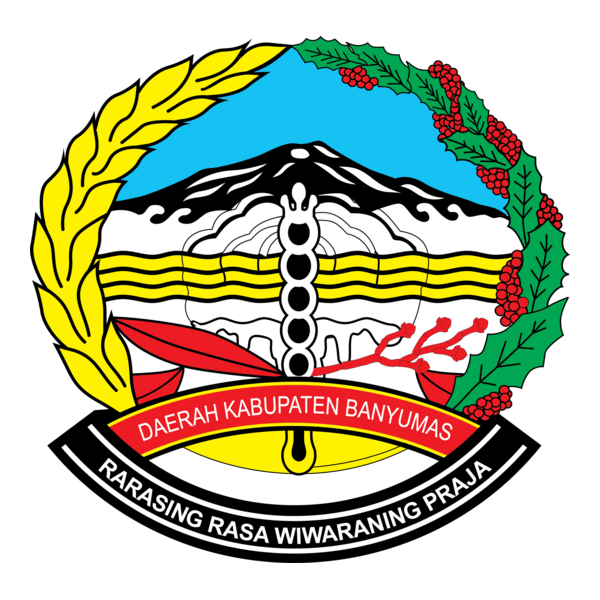
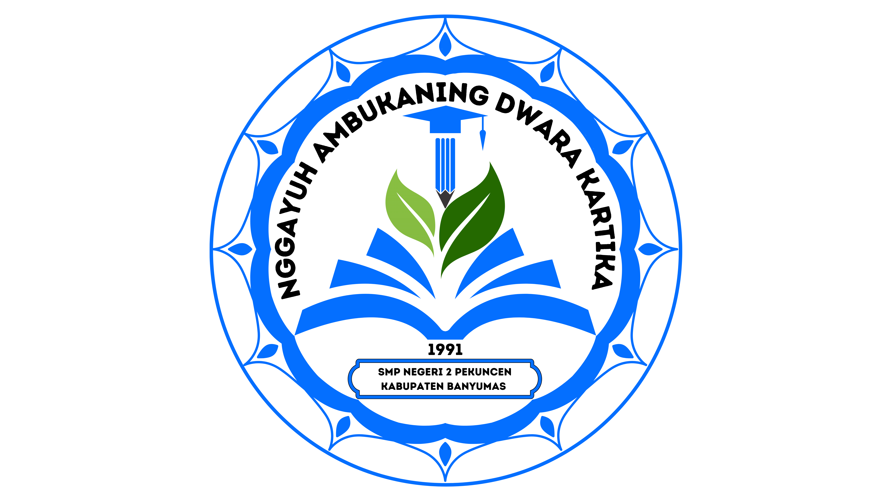

Angket Pemilihan Sosiometri
Pilihlah 3 orang teman sekelas yang paling kamu sukai/nyaman untuk diajak bekerja sama.
Matriks Rekapitulasi Sosiometri
Bobot Skoring: P1 = 3 poin | P2 = 2 poin | P3 = 1 poin
| No | Nama Siswa | JK | Pilihan 1 | Pilihan 2 | Pilihan 3 | Total Skor | Kategori Status |
|---|


PEMERINTAH KABUPATEN BANYUMAS
SMP NEGERI 2 PEKUNCEN
Layanan Bimbingan dan Konseling
Tahun Pelajaran 2026/2027

LAPORAN HASIL ASESMEN SOSIOMETRI KELAS
Kelas: - | Kriteria: -
I. Ringkasan Diagnostik Hubungan Sosial
-
-
-
II. Diagram Sosiogram Hubungan Sosial
III. Rekapitulasi Skor & Klasifikasi Siswa
| No | Nama Siswa | JK | P1 | P2 | P3 | Skor | Status |
|---|
IV. Rekomendasi & Rencana Tindak Lanjut Guru BK
1. Bimbingan Kelompok: Mengikutsertakan siswa yang terisolir dan terabaikan dalam kegiatan dinamika kelompok terstruktur guna melatih keterampilan sosial dan komunikasi asertif.
2. Konseling Individual: Memberikan konseling eksploratif bagi siswa yang terisolir untuk mengidentifikasi hambatan adaptasi atau potensi kendala penyesuaian diri.
3. Kolaborasi dengan Wali Kelas: Mengatur kembali penataan formasi tempat duduk dan anggota kelompok belajar dengan mendistribusikan siswa berstatus Bintang mendampingi siswa terisolir.
Mengetahui,
Kepala Sekolah
( ............................................ )
NIP. ........................................
Pekuncen,
Guru Bimbingan dan Konseling
( ............................................ )
NIP. ........................................